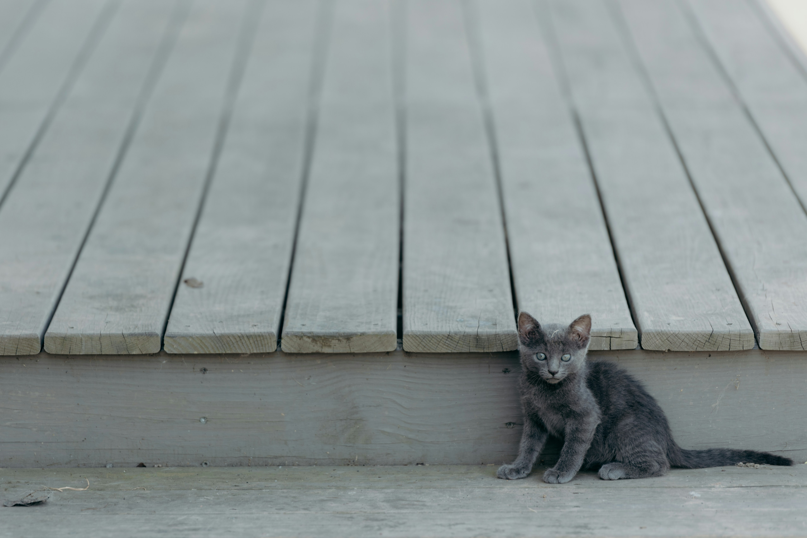

Şehirde Aniden Patlayan Bahçede Ağaç Çıkma Modası Yükseliyor
Yeni bir şehir trendi ortaya çıktı: Patlayan bahçelerde ağaç çıkma modası! Vatandaşlar, "Ağaçları doğaçlama bahçemde yeşerten tek şey patlayan sinirlerim" diyerek bu modayı benimsedi. Uzmanlar, bunun psikolojik rahatlama sağlamasıyla ilgili bir teorileri olduğunu belirtiyor.

Kaynak Zaytung
“Beni Sevgilim Bıraktı, O Yüzden Kedi Sahiplenmeye Karar Verdik”
34 yaşındaki Merve Hanım, sevgilisinin kendisini bırakmasının ardından, yalnızlığını gidermek için beş kedi sahiplenmeye karar verdi. Merve Hanım, “Kediler, yalnızlığımı unutturuyor ama hâlâ mesaj atmıyorlar” şeklinde konuştu.
Kaynak Zaytung
Evde Kalma Koşullarını Denetleyen Yeni Çalışma Grubu Kuruldu
Yeni bir denetim birimi, vatandaşların evde kalma kurallarına uyup uymadığını kontrol etmek için kuruldu. Yetkililer, “Evde kalmaya çalışanların kural ihlali yapmasını önlemek için şehrin dört bir yanına gizli kameralar yerleştiriyoruz” dedi.

Kaynak Zaytung